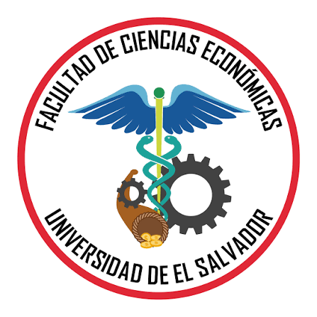

Facultad de Ciencias Económicas
Simulador de absorción curricular
Consulte la absorción de asignaturas hacia los planes de estudio 2027 de las carreras disponibles.
Licenciatura en Mercadeo Internacional
Plan 2004 → Plan 2027
Licenciatura en Administración de Empresas
Plan 1994 → Plan 2027
Acceso habilitado únicamente para las personas autorizadas durante la etapa de revisión.